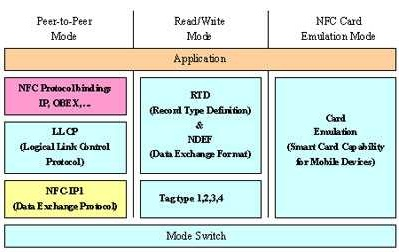

Android学习笔记之NFC近距离无线通讯技术（Dean）
首先要弄清楚NFC是什么？

NFC是Near Field Communication缩写，即近距离无线通讯技术。由飞利浦公司和索尼公司共同开发的NFC是一种非接触式识别和互联技术，可以在移动设备、消费类电子产品、PC 和智能控件工具间进行近距离无线通信。NFC 提供了一种简单、触控式的解决方案，可以让消费者简单直观地交换信息、访问内容与服务。
NFC将非接触读卡器、非接触卡和点对点（Peer-to-Peer）功能整合进一块单芯片，为消费者的生活方式开创了不计其数的全新机遇。这是一个开放接口平台，可以对无线网络进行快速、主动设置，也是虚拟连接器，服务于现有蜂窝状网络、蓝牙和无线 802.11 设备。
NFC可兼容索尼公司的FeliCaTM卡以及已广泛建立的非接触式智能卡架构，该架构基于ISO 14443 A，使用飞利浦的MIFARE?技术。
为了推动NFC的发展和普及，飞利浦、索尼和诺基亚创建了一个非赢利性的行业协会——NFC论坛，促进NFC技术的实施和标准化，确保设备和服务之间协同合作。目前，NFC论坛在全球拥有70多个成员，包括：万事达卡国际组织、松下电子工业有限公司、微软公司、摩托罗拉公司、NEC公司、瑞萨科技公司、三星公司、德州仪器制造公司和 Visa 国际组织。
编者注：NFC全球最早的商用发布：*德国，美因茨交通公司（RMV）2006年4月19日，飞利浦、诺基亚、Vodafone公司及德国法兰克福美因茨地区的公交网络运营商美因茨交通公司（Rhein-Main Verkehrsverbund）宣布，在成功地进行为期10个月的现场试验后，近距离无线通信（NFC）技术即将投入商用。目前，Nokia 3220手机已集成了NFC技术，可以用作电子车票，还可在当地零售店和旅游景点作为折扣忠诚卡使用。哈瑙市的大约95.000位居民现在只需轻松地刷一下兼容手机，就能享受NFC式公交移动售票带来的便利。
与RFID一样，NFC信息也是通过频谱中无线频率部分的电磁感应耦合方式传递，但两者之间还是存在很大的区别。首先，NFC是一种提供轻松、安全、迅速的通信的无线连接技术，其传输范围比RFID小，RFID的传输范围可以达到几米、甚至几十米，但由于NFC采取了独特的信号衰减技术，相对于 RFID来说NFC具有距离近、带宽高、能耗低等特点。
其次，NFC与现有非接触智能卡技术兼容，目前已经成为得到越来越多主要厂商支持的正式标准。再次，NFC还是一种近距离连接协议，提供各种设备间轻松、安全、迅速而自动的通信。与无线世界中的其他连接方式相比，NFC是一种近距离的私密通信方式。最后，RFID更多的被应用在生产、物流、跟踪、资产管理上，而NFC则在门禁、公交、手机支付等领域内发挥着巨大的作用。
同时，NFC还优于红外和蓝牙传输方式。作为一种面向消费者的交易机制，NFC比红外更快、更可靠而且简单得多，不用向红外那样必须严格的对齐才能传输数据。与蓝牙相比，NFC面向近距离交易，适用于交换财务信息或敏感的个人信息等重要数据；蓝牙能够弥补NFC通信距离不足的缺点，适用于较长距离数据通信。因此，NFC和蓝牙互为补充，共同存在。事实上，快捷轻型的NFC协议可以用于引导两台设备之间的蓝牙配对过程，促进了蓝牙的使用。
NFC手机内置NFC芯片，组成RFID模块的一部分，可以当作RFID无源标签使用———用来支付费用；也可以当作RFID读写器———用作数据交换与采集。NFC技术支持多种应用，包括移动支付与交易、对等式通信及移动中信息访问等。通过NFC手机，人们可以在任何地点、任何时间，通过任何设备，与他们希望得到的娱乐服务与交易联系在一起，从而完成付款，获取海报信息等。NFC设备可以用作非接触式智能卡、智能卡的读写器终端以及设备对设备的数据传输链路，其应用主要可分为以下四个基本类型：用于付款和购票、用于电子票证、用于智能媒体以及用于交换、传输数据。
我们来看一下NFC在Android代码中的位置：
1.frameworks/base/core/java/android/nfc
ErrorCodes.java
This class defines all the error codes that can be returned by the service and producing an exception on the application level. These are needed since binders does not support exceptions.
弄了个iserror方法 定义了一堆小于0的常量！等于0就success
public static boolean isError(int code) { if (code < 0) {
return true;
} else {
return false;
}
}
TagLostException.java
FormatException.java
自定义的一个类型转化异常！
public FormatException(String message) { super(message);
}
自己抛出异常
LlcpPacket.java
Represents a LLCP packet received in a LLCP Connectionless communication
LLCP –其在定义一个通讯协定，以管理架构在ISO 18092/NFC IP-1的NFC设备间的逻辑连结，当然这个通讯协定主要是为了Peer-to-Peer模式下，设备间通讯时使用。
private final int mRemoteSap;private final byte[] mDataBuffer;
NdefMessage.java
Represents an NDEF (NFC Data Exchange Format) data message that contains one or more
数据的数据交换格式
public NdefMessage(byte[] data) throws FormatException { mRecords = null; // stop compiler complaints about final field
if (parseNdefMessage(data) == -1) {
throw new FormatException("Error while parsing NDEF message");
}
}
private native int parseNdefMessage(byte[] data);
NdefRecord.java
逻辑记录数据交换的格式。
private final byte mFlags;private static final byte FLAG_MB = (byte) 0x80;
private static final byte FLAG_ME = (byte) 0x40;
private static final byte FLAG_CF = (byte) 0x20;
private static final byte FLAG_SR = (byte) 0x10;
private static final byte FLAG_IL = (byte) 0x08;
private final short mTnf; 表示格式如何解读型态栏位
private final byte[] mType;描述了记录格式
private final byte[] mId;一个唯一的标识符备案
private final byte[] mPayload;实际数据的有效载荷
private native int parseNdefRecord(byte[] data);
NfcAdapter.java
Represents the device's local NFC adapter.
NfcManager.java
High level manager used to obtain an instance of an
其实只有一个getDefaultAdapter（）说明NfcAdapter其实正扮演着manager的角色
NfcSecureElement.java
This class provides the primary API for managing all aspects Secure Element.Get an instance of this class by calling Context.getSystemService(Context.NFC_SERVICE).
这个类提供了主要的API的管理所有安全方面的元素
Tag.java
Represents a (generic) discovered tag./*package*/ final byte[] mId;The tag identifier
/*package*/ final int[] mTechList;
/*package*/ final String[] mTechStringList;
/*package*/ final Bundle[] mTechExtras;
/*package*/ final int mServiceHandle; // for use by NFC service, 0 indicates a mock
/*package*/ final INfcTag mTagService;
/*package*/ int mConnectedTechnology;
public Tag(byte[] id, int[] techList, Bundle[] techListExtras,
if (techList == null) {
throw new IllegalArgumentException("rawTargets cannot be null");
}
mId = id;
mTechList = Arrays.copyOf(techList, techList.length);
mTechStringList = generateTechStringList(techList);
// Ensure mTechExtras is as long as mTechList
mTechExtras = Arrays.copyOf(techListExtras, techList.length);
mServiceHandle = serviceHandle;
mTagService = tagService;
mConnectedTechnology = -1;
}
TechListParcel.java
private String[][] mTechLists;public TechListParcel(String[]... strings) {
mTechLists = strings;
}
TransceiveResult.java
Class used to pipe transceive result from the NFC service.
private final boolean mTagLost;private final boolean mSuccess;
private final byte[] mResponseData;
ILlcpConnectionlessSocket.aidl
ILlcpServiceSocket.aidl
ILlcpSocket.aidl
INfcAdapter.aidl
INfcSecureElement.aidl
INfcTag.aidl
IP2pInitiator.aidl
IP2pTarget.aidl
LlcpPacket.aidl
NdefMessage.aidl
NdefRecord.aidl
Tag.aidl
TechListParcel.aidl
TransceiveResult.aidl
2.frameworks/base/core/java/android/nfc/tech
NFC Protocol Bindings –在Peer-to-Peer模式下，NFC Forum不自己另定高层的资料传输协定，而是直接使用其他既有的资料传输协定，如IP、OBEX等，来实现该模式下设备间资料的传输。
BasicTagTechnology.javaA base class for tag technologies that are built on top of transceive().
这个应该是最顶端的transceive()方法！IsoDep.java NfcA.javaNfcB.javaNfcF.javaNfcV.java全部调用此方法实现！
/*package*/ final Tag mTag;/*package*/ boolean mIsConnected;
/*package*/ int mSelectedTechnology;
IsoDep.java
A low-level connection to a {@link Tag} using the ISO-DEP technology, also known as ISO1443-4.
MifareClassic.java
即Philips的Mifare，现有悠游卡即属此类
MifareUltralight.javaNdef.java
NDEF – NFC Data Exchange Format (NDEF) 主要在定义一个简洁与共同的资料格式，此资料格式将可作为NFC设备在读取标签（Tag）资料时的一个依据。此规格於2006年便完成制定并已公告。
目前整个NFC相关技术规格标准的制定，主要是由NFC Forum负责
下图为NFC Forum所展示的NFC技术规格架构
<img id="\"aimg_u7zQJ\"" onclick="\"zoom(this," this.src,="" 0,="" 0)\"="" class="\"zoom\"" file="\"http://dl.iteye.com/upload/attachment/471075/a760e498-60e7-398c-8f23-e7bae2f0f83a.jpg\"" onmouseover="\"img_onmouseoverfunc(this)\"" lazyloadthumb="\"1\"" border="\"0\"" alt="\"\"">A high-level connection to a {@link Tag} using one of the NFC type 1, 2, 3, or 4 technologies to interact with NDEF data. MiFare Classic cards that present NDEF data may also be used via this class. To determine the exact technology being used call
NdefFormatable.java
An interface to a {@link Tag} allowing to format the tag as NDEF.
NfcA.java
A low-level connection to a {@link Tag} using the NFC-A technology, also known as ISO1443-3A.
NfcB.java
A low-level connection to a {@link Tag} using the NFC-B technology, also known as ISO1443-3B.
NfcF.java
A low-level connection to a {@link Tag} using the NFC-F technology, also known as JIS6319-4.
NfcV.java
A low-level connection to a {@link Tag} using NFC vicinity technology, also known as ISO15693
TagTechnology.java
最上层的接口这里定义集中协议类型的标识 继承closeable便于克隆
拥有方法getTag connect reconnect close isConnected
这里涉及到几个协议一起来看一下


3.frameworks/base/core/java/com/android/internal/nfcLlcpConnectionlessSocket.java
LlcpException.java
LlcpServiceSocket.java
LlcpSocket.java
NfcException.java
P2pDevice.java
P2pDevice is the abstract base class for all supported P2P targets the
NfcManager can handle.
P2pInitiator.java
P2pInitiator represents the initiator in an NFC-IP1 peer-to-peer
communication.
P2pTarget.java
P2pTarget represents the target in an NFC-IP1 peer-to-peer communication.